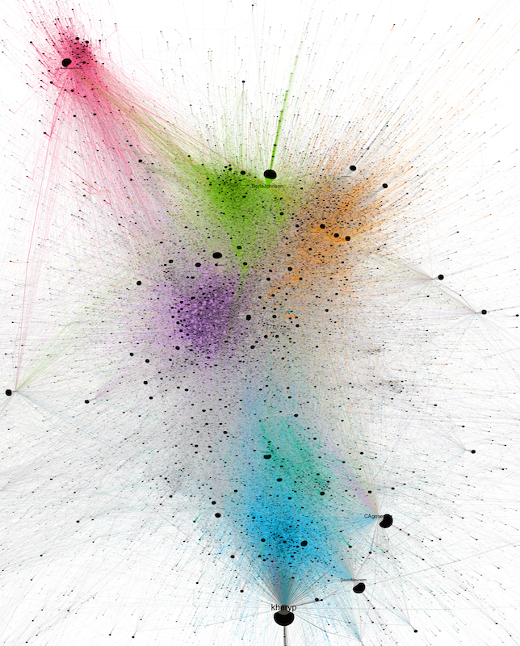
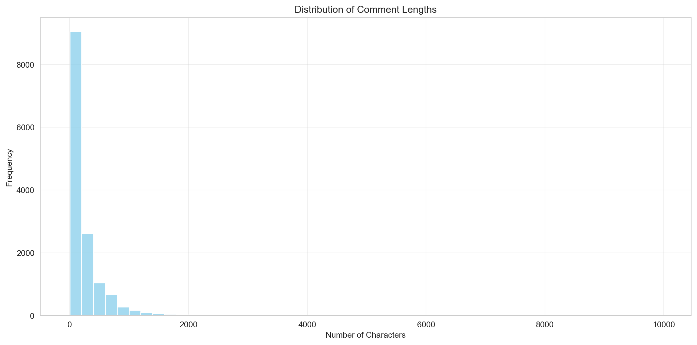
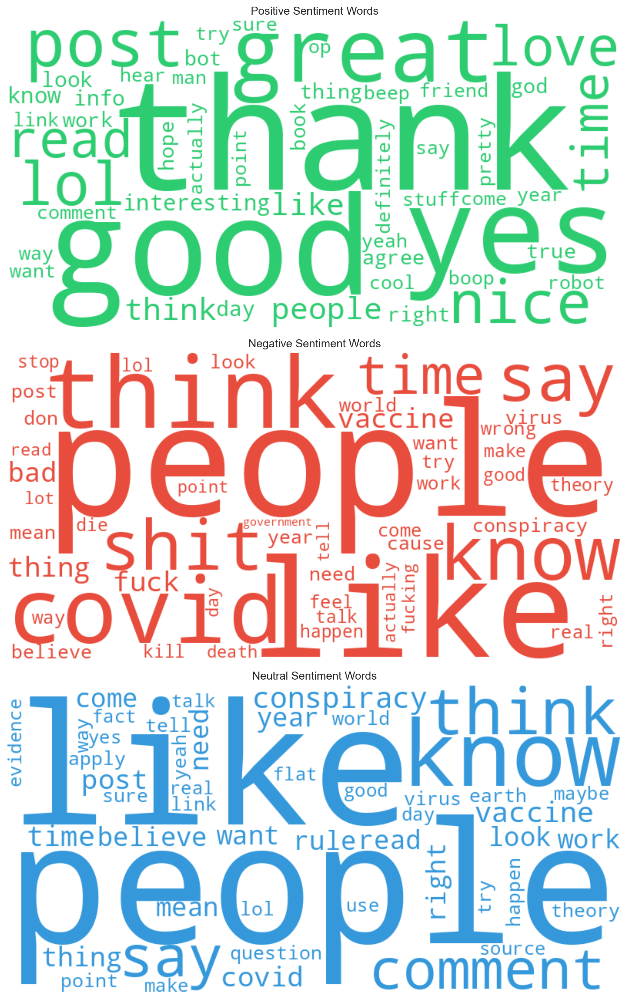
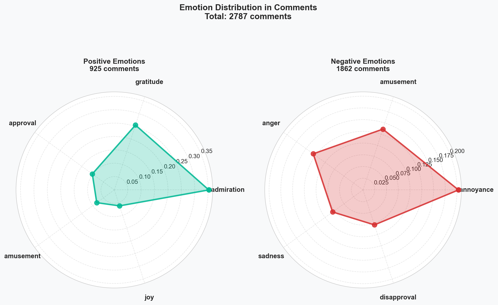
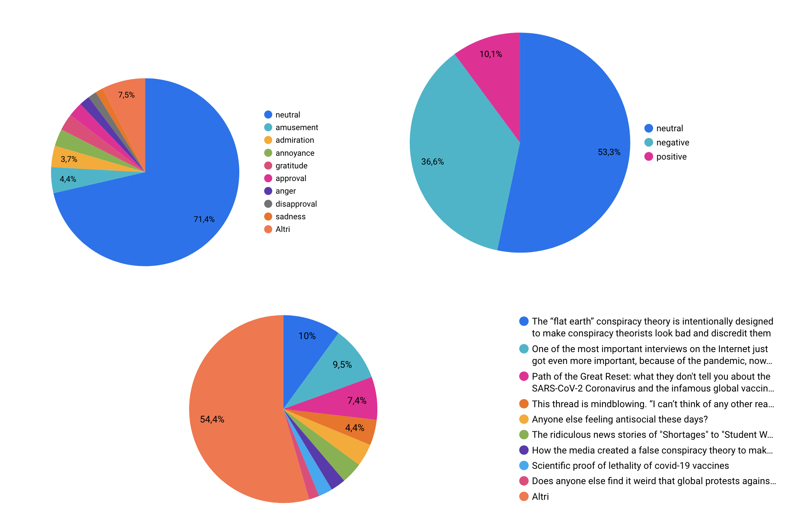

config_filename = 'input/reddit_config.ini' # change this to point to your config file
config = configparser.ConfigParser()
config.read(config_filename)
reddit = praw.Reddit(
client_id=config['reddit']['client_id'],
client_secret=config['reddit']['client_secret'],
user_agent=config['reddit']['user_agent'],
check_for_async=False
)Covid-19 and 5G
Conspiracy theories during and after the pandemic
Introduction
The Covid-19 marked a huge social rift, establishing a historic point from which to start again. This pandemic represents one of the most significant and transformative events of the 21st century, profoundly affecting not only public health, but also social, economic and cultural structures globally. As pointed out by Alon et al. (2020), ‘the COVID-19 crisis is not just a health crisis; it is a social and economic crisis of unprecedented scale.’ This event has generated a global emergency context that offers a unique opportunity to examine how societies respond to systemic crises and how social inequalities manifest and exacerbate in such circumstances. From a sociological perspective, COVID-19 has highlighted and amplified many of the pre-existing dynamics, such as social, economic and health inequalities. According to Bambra et al. (2020), the pandemic highlighted ‘syndemic interactions’ between COVID-19 and other health conditions, disproportionately affecting disadvantaged groups. This phenomenon reflects structural inequalities, as low-income and ethnic minority populations were often the most vulnerable to both infection but especially to the economic impacts of containment measures. COVID-19 has transformed the modes of social interaction, accelerating technological changes such as teleworking and distance learning. These changes have produced new areas of sociological study, with implications for family dynamics, work relationships and psychological well-being. As pointed out by De’, Pandey, and Pal (2020), ‘digital technologies have become central to maintaining work, education, and social life during the pandemic, but their rapid adoption has also highlighted issues of access and equity.’ Forced digitisation has created a ‘digital divide’ that separates those who have access to the necessary technologies and skills from those who are excluded. Another crucial aspect is the role of government policies and health institutions in managing the crisis. The pandemic has raised questions about the relationship between citizens and governments, fueling debates about the legitimacy of restrictions and the balance between public safety and individual freedoms.
Thus, COVID-19 offered an opportunity to reflect on the concept of ‘social resilience,’ understood as the ability of communities to adapt and respond to crisis situations. According to keck and Sakdapolrak (2013), social resilience is not only about the ability to recover from a shock, but also includes transformation towards more equitable and sustainable forms of organisation. This approach is particularly relevant in the context of COVID-19, where the pandemic acted both as an immediate health crisis and as a catalyst for long-term structural changes. Therefore, it represents a complex and multidimensional phenomenon that challenges traditional sociological theories and opens up new perspectives for the study of the interactions between health, society and politics. Examining these aspects not only contributes to a better understanding of the impact of the pandemic, but also offers tools to prepare for future global crises.
In a previous group project, we focused our analysis on tweets published during the early months of the pandemic in the UK. The analysis clearly revealed the presence, even in the initial stages, of a conspiratorial core, which perceived the pandemic as either a form of control over people by the so-called “powerful elites” or as “fake news” aimed at concealing the real interests of dominant groups. This group is clearly visible in the identified network (highlighted in magenta), an image of which is provided below.

Research question:
- Starting from the socio-cultural importance that the pandemic played within the so called “conspiracy” social groups, what remains of the relationship between these theories (e.g., 5G) and the COVID-19 narrative?
- By using a different platform that allows the identification of thematic groups, what are the most widespread sentiments and emotions?
Based on Google Trends data, we can observe that the link between COVID-19 and 5G was established early in the pandemic, with a peak in April 2020. Although there are no scientifically proven adverse health impacts from the exposure to 5G radio frequency radiation, in social media misinformation related to 5G has been presented as facts, and circulated extensively. A 2021 article (“How Does Fake News of 5G and COVID-19 Spread Worldwide?” 2021) that monitored data from Google Trends showed that searches related to coronavirus and 5G started at different times, but peaked in the same week of April 5 in six countries.

Methodology
The results of the analysis on twitter data revealed a significant connection between cospiracy (in particular, 5G related theories) at the time of Covid pandemic. The idea behind the analysis is to check, nowadays, if similar trends are still evindent, also years after the pandemic and in a different audience and social network e.g. on Reddit.
Studying conspiracy theories on Reddit is particularly valuable due to the platform’s unique structure and community dynamics. Reddit operates through user-driven subreddits, each focused on specific topics or interests, fostering highly engaged and often ideologically homogeneous communities. This decentralized structure allows conspiracy theories to gain traction, evolve, and spread within echo chambers where like-minded individuals reinforce one another’s beliefs. Furthermore, Reddit’s voting system, which amplifies popular content, enables rapid dissemination of narratives, including misinformation, to broader audiences. Its semi-anonymous nature also encourages open discussions, making it a rich resource for analyzing the origins, evolution, and social impact of conspiratorial discourse in real time.
To better understand the dynamics of conspiracy-related discussions on Reddit, we conducted an analysis of user comments within a selected subreddit using sentiment analysis and emotion analysis techniques. Sentiment analysis provides insights into the overall tone of the discourse—whether positive, negative, or neutral—while emotion analysis helps identify specific emotional drivers, such as fear, anger, or curiosity, that fuel engagement with conspiratorial narratives. This dual approach enables us to capture both the affective undercurrents and the broader narrative tendencies within the community, shedding light on how emotional responses contribute to the spread and persistence of conspiracy theories.
Sentiment analysis and emotion analysis represent two complementary but distinct approaches in the field of natural language processing (NLP). Sentiment analysis focuses on identifying the polarity of a text, generally classifying it as positive, negative or neutral. As stated by Liu (2012), ‘sentiment analysis aims to discover opinions and attitudes expressed, often reducing emotional complexity to a binary or ternary dimension’. This simplification makes sentiment analysis ideal for applications such as monitoring online reputation or analysing consumer reviews. Whereas, emotion analysis goes beyond the latter polarity by trying to identify specific emotions expressed in the text, such as anger, joy, sadness or fear. In our case, we used the fields identified by Google. As described by Mohammad and Turney (2013), ‘emotion analysis explores the human emotional spectrum, relying on psychological theories that describe primary and secondary emotions’. This approach has applications in more complex contexts.
In summary, while sentiment analysis simplifies emotions into polarity categories, emotion analysis focuses on more detailed emotional mapping, enriching the interpretative possibilities of textual data.
Analysis and Results
Data Scraping
We focused our attention on the r/conspiracy subreddit, which is a subreddit dedicated to the study of conspiracies and secret societies. We use the PRAW library for the data scraping using the Reddit’s API. We build the get_thread_list() function to retrieve a list of threads from the subreddit, and then the get_thread_comments() function to retrieve the comments for each thread.
To use the PRAW library and connect to Reddit’s API, we create a token using a personal account, as described in Reddit’s guide.
def get_thread_list(
reddit: praw.Reddit, subreddit: str, keywords: str
) -> pd.DataFrame:
subreddit = reddit.subreddit(subreddit)
search_results = subreddit.search(
query=keywords, sort="comments", time_filter="all", limit=None
)
data_list = []
for post in search_results:
data_dict = {
"date": datetime.fromtimestamp(post.created_utc),
"title": post.title,
"votes": post.score,
"comments": post.num_comments,
"link": re.sub(rf"^/r/{subreddit}/comments/", "", post.permalink),
}
data_list.append(data_dict)
return pd.DataFrame(data_list)
# Function to convert UNIX timestamp to a readable date
def convert_timestamp(unix_timestamp):
return datetime.utcfromtimestamp(unix_timestamp) \
.strftime('%Y-%m-%d %H:%M:%S')
# Recursive function to extract all comments and nested comments
def extract_comments(comment, thread_id, thread_title, thread_author):
# Extract comment data
comment_data = {
"thread_id": thread_id,
"thread_title": thread_title,
"thread_author": thread_author,
"comment_id": comment.id,
"parent_id": comment.parent_id,
"author": str(comment.author) if comment.author else "Anonymous",
"text": (
comment.body
if comment.body not in ["[deleted]", "[removed]"]
else None
),
"date": (
convert_timestamp(comment.created_utc)
if hasattr(comment, "created_utc")
else None
),
}
nested_comments = []
# If the comment has replies, process them recursively
if comment.replies:
comment.replies.replace_more(
limit=None
) # Ensure all replies are loaded
for reply in comment.replies:
nested_comments.extend(
extract_comments(reply, thread_id, thread_title, thread_author)
)
return [comment_data] + nested_comments
def scrape_threads(thread_urls):
all_comments = []
for thread_url in thread_urls:
print(f"Processing thread: {thread_url}")
# The following lines need to be indented to be part of the for loop
submission = reddit.submission(url=thread_url)
submission.comments.replace_more(limit=None) # Load all comments
# Extract thread metadata
thread_id = submission.id
thread_title = submission.title
thread_author = str(submission.author)
# Process top-level comments
for top_level_comment in submission.comments:
all_comments.extend(
extract_comments(
top_level_comment, thread_id, thread_title, thread_author
)
)
time.sleep(1)
return all_commentsWe use get_thread_list() and scrape_threads() to get all threads list and download all comments from each thread respectively.
# Get the list of threads
df = get_thread_list(reddit, 'conspiracy', 'covid 5g')
# Create a list of thread URLs
baseurl = 'https://www.reddit.com/r/conspiracy/comments/'
thread_urls = [baseurl+link for link in df['link'].to_list()]
# Scrape threads and retrieve all comments
comments = scrape_threads(thread_urls)
# Create a Pandas DataFrame
comments_df = pd.DataFrame(comments)At the end of the process we have a dataset with 14165 comments from 208 threads. The structure of the DataFrame is shown below (Table 1 and Table 2).
| thread_id | thread_title | thread_author | comment_id | parent_id | author | text | date | |
|---|---|---|---|---|---|---|---|---|
| count | 14165 | 14165 | 14165 | 14165 | 14165 | 14165 | 14165 | 14165 |
| unique | 208 | 208 | 184 | 14165 | 7768 | 4791 | 13731 | 14131 |
| thread_id | thread_title | thread_author | comment_id | parent_id | author | text | date | |
|---|---|---|---|---|---|---|---|---|
| 0 | 130qa8d | The “flat earth” conspiracy theory is intentio... | raf_lapt0p | jhxeksf | t3_130qa8d | AutoModerator | ###[Meta] Sticky Comment\n\n[Rule 2](https://w... | 2023-04-27 15:07:45 |
| 1 | 130qa8d | The “flat earth” conspiracy theory is intentio... | raf_lapt0p | jhzsd9e | t1_jhxeksf | dcforce | See what you are missing because of the Globe ... | 2023-04-28 00:49:20 |
| 2 | 130qa8d | The “flat earth” conspiracy theory is intentio... | raf_lapt0p | jhxeulc | t3_130qa8d | WittyNameNo2 | Should we be calling this the “flat earth cons... | 2023-04-27 15:09:35 |
| 3 | 130qa8d | The “flat earth” conspiracy theory is intentio... | raf_lapt0p | ji2y3w5 | t1_jhxeulc | vld138 | I don't think this is a good idea..but in your... | 2023-04-28 17:46:38 |
| 4 | 130qa8d | The “flat earth” conspiracy theory is intentio... | raf_lapt0p | jhynp63 | t1_jhxeulc | Emergency_Sandwich_6 | I think the actual conspiracy is that space ob... | 2023-04-27 20:01:14 |
Descriptive Analysis
The distribution of comments over time reveals distinct peaks and fluctuations in user activity on the subreddit. The most significant spike occurred in the early months of the COVID-19 pandemic (around May 2020), likely reflecting heightened public interest and debate surrounding conspiracy theories during the initial global crisis. After this peak, activity decreased but remained steady with periodic surges, particularly in late 2021, early 2022, and April 2023. These later peaks may correspond to specific events or renewed public discourse around related conspiracy theories. The overall trend suggests that while initial activity was driven by the pandemic’s novelty, subsequent surges indicate the community’s sustained engagement with conspiratorial narratives in response to ongoing events.

The distribution of comment lengths highlights that most comments in the subreddit are very short, with a significant majority falling below 500 characters. This suggests that the discussions are predominantly composed of concise exchanges, such as brief opinions, reactions, or agreements. However, the distribution also exhibits a long tail, with a smaller number of comments exceeding 1,000 characters. These longer comments likely represent more detailed contributions, such as in-depth arguments, explanations, or rebuttals. The overall trend indicates that while the subreddit is largely driven by quick interactions, there is space for more substantial discourse within the community.

The distribution of average comment lengths per month reveals a relatively stable trend, with most months maintaining an average between 200 and 400 characters. However, certain months, such as mid-2023, show significant spikes, where the average comment length exceeds 500 characters. These peaks may indicate periods of more in-depth discussions or debates triggered by specific events or controversies within the subreddit. Conversely, months with lower averages might reflect more reactive or concise interactions, potentially linked to high activity levels or fleeting trends. This pattern suggests that while the subreddit generally fosters brief exchanges, certain periods see more substantial contributions, likely driven by topical engagement.

Sentiment Analysis
Before proceding with the sentiment analysis, we first need to clean the text, removing HTML tags, emojis, links, new lines, etc.
nlp_en = spacy.load("en_core_web_sm")
def clean_text_en(text, include_stopwords=False):
# Removal of HTML tags
text = re.sub(r'<[^>]+>', '', text)
# Removal of emojis using a specific pattern
emoji_pattern = re.compile("["
u"\U0001F600-\U0001F64F" # Emoticons
u"\U0001F300-\U0001F5FF" # Symbols and pictograms
u"\U0001F680-\U0001F6FF" # Transport and map symbols
u"\U0001F1E0-\U0001F1FF" # Flags (regional indicators)
u"\U00002500-\U00002BEF" # Miscellaneous symbols
u"\U00002702-\U000027B0"
u"\U000024C2-\U0001F251"
u"\U0001f926-\U0001f937"
u"\U00010000-\U0010ffff"
u"\u2640-\u2642"
u"\u2600-\u2B55"
u"\u200d"
u"\u23cf"
u"\u23e9"
u"\u231a"
u"\ufe0f" # Variants
u"\u3030"
"]+", flags=re.UNICODE)
text = emoji_pattern.sub(r'', text)
# Removal of "RT" as an isolated word
text = re.sub(r'\bRT\b', '', text) # "\b" ensures that RT is treated as a separate word
# Removal of links and user mentions
text = re.sub(r'(https?://\S+|www\.\S+|@\w+\s*)', '', text)
# Removal of hashtags
text = re.sub(r'#[^\s]+', '', text)
# Removal of newline characters and sequences of ">"
text = text.replace("\n", '').replace(">", '')
# Removal of special characters while retaining question marks
text = re.sub(r'[^A-Za-zÀ-ÿ\s\'?]+', ' ', text)
# Removal of multiple spaces
text = re.sub(r'\s+', ' ', text).strip()
text = text.lower()
# Text analysis with spaCy for lemmatization
doc = nlp_en(text)
# doc = nlp_it(text)
if include_stopwords:
# Include stopwords
cleaned_text = ' '.join(token.lemma_ for token in doc if not token.is_punct)
else:
# Exclude stopwords
cleaned_text = ' '.join(token.lemma_ for token in doc if not token.is_stop and not token.is_punct)
return cleaned_text
comments_df['clean_text'] = comments_df['text'].progress_apply(clean_text_en)To perform the sentiment analysis we use the the Twitter-roBERTa-base for Sentiment Analysis, trained by Cardiff NLP group at Cardiff University. The model was trained on ~124M tweets from January 2018 to December 2021, and finetuned for sentiment analysis with the TweetEval benchmark.
from transformers import pipeline
tokenizer_kwargs = {'padding':True,'truncation':True,'max_length':512}
sentiment = pipeline("text-classification", model="cardiffnlp/twitter-roberta-base-sentiment-latest", **tokenizer_kwargs)
def sentiment_analysis(text):
result = sentiment(text)
return result[0]['label']
comments_df['sentiment'] = comments_df['clean_text'].progress_apply(sentiment_analysis) The sentiment distribution of the comments shows that the majority are neutral (53.8%), indicating a predominantly objective or factual tone in the discussions. Negative sentiments make up a significant portion (35.8%), suggesting that many comments express criticism, frustration, or disagreement, which is common in discussions involving conspiracy theories or controversial topics. Positive sentiments, on the other hand, are relatively rare (10.3%), reflecting that expressions of support, agreement, or optimism are less frequent. This distribution suggests that while most interactions aim to remain neutral or informational, the discourse leans more toward negativity than positivity, highlighting the contentious and polarizing nature of the subreddit’s themes.

The sentiment trends over time show that neutral comments consistently dominate the subreddit discussions (blue), maintaining higher numbers across all time periods. Peaks in sentiment activity, particularly around early 2020, late 2021, and mid-2023, align with significant spikes in comment volume, likely tied to key events or controversies. Negative comments (red) generally follow a similar pattern to neutral ones, with noticeable surges during these periods, indicating a rise in criticism or frustration. Positive comments (green) remain consistently lower, with minor increases during peak activity times, suggesting that optimism or agreement is less prevalent. Overall, the data reflects a trend where neutral and negative sentiments shape the majority of discussions, emphasizing the community’s focus on debate and critique rather than consensus or positivity.
The sentiment trends for threads with 100 or more comments demonstrate a similar overall pattern to general subreddit activity, with neutral sentiments (blue) being the most dominant across all time periods. Threads with high engagement show significant spikes in sentiment activity, particularly during major peaks in early 2020, late 2021, and mid-2023. Negative sentiments (red) closely follow neutral ones, suggesting that highly active threads often involve contentious or critical discussions. Positive sentiments (green) remain consistently low, even in these high-engagement threads, indicating that even in popular discussions, expressions of agreement or optimism are rare. This distribution suggests that threads with significant participation are driven by debates, critiques, or polarizing topics rather than consensus-building or positive discourse.

To analyze the content of the comments based on the type of sentiment, we applied the Term Frequency-Inverse Document Frequency (TF-IDF) function. TF-IDF is a technique used to measure the importance of a word in a corpus of documents. It is based on two main components:
- Term Frequency (TF): measures how often a word appears in a single document.
- Inverse Document Frequency (IDF): assesses how “special” or rare a word is across the entire corpus, penalizing terms that are too common (e.g., “and” or “the”). The product of these two components assigns a higher score to words that are frequent in a document but rare across the entire corpus, making them ideal for identifying key terms in the analyzed content.
The wordclouds highlight the distinctive words for each type of sentiment:
Positive Sentiment Words (green): Key terms include “thank”, “great”, “good”, and “nice”, which indicate appreciation, recognition, and positive tone. Other words like “love” and “interesting” suggest engagement and curiosity towards the content.
Negative Sentiment Words (red): Words such as “shit”, “fuck”, “bad”, and “vaccine” dominate this wordcloud, reflecting frustration, criticism, or anger. The presence of terms related to COVID-19 (“covid”, “virus”, “death”) and conspiracy theories (“conspiracy”) highlights the often polemical and polarized context of the discussions.
Neutral Sentiment Words (blue): The neutral wordcloud includes more generic and informational terms like “people”, “think”, “know”, and “comment”. These terms suggest exchanges of ideas or information without strong emotional charge. The presence of words like “conspiracy” and “earth” may indicate a context of rational or argumentative discussions, often typical of conspiracy theory discourse.
The wordclouds clearly reflect the differences in tone and purpose of the comments. Positive sentiments show appreciation and agreement, negative sentiments reveal criticism and frustration, and neutral sentiments represent more informational exchanges or less emotionally charged debates. This demonstrates how the subreddit dynamics range from intense emotional expressions to more rational discussions.

Emotion Analysis
For emotion analysis we use the SamLowe/roberta-base-go_emotions model. The model was trained from roberta-base on the go_emotions dataset for multi-label classification.
from transformers import pipeline
tokenizer_kwargs = {'padding':True,'truncation':True,'max_length':512}
emotion = pipeline("text-classification", model="SamLowe/roberta-base-go_emotions", **tokenizer_kwargs)
def emotion_analysis(text):
result = emotion(text)
return result[0]['label']
comments_df['emotion'] = comments_df['clean_text'].progress_apply(emotion_analysis)The distribution of emotions in the comments reveals that the majority of them are classified as “neutral,” with 10,183 instances dominating the dataset. This suggests that a significant portion of the discussions is factual or lacks strong emotional expression. Among the identifiable emotions, amusement (606), admiration (515), and gratitude (419) are the most frequent, indicating a notable presence of positive interactions. On the other hand, negative emotions such as annoyance (403) and anger (257) are also prevalent, reflecting critical or frustrated tones in some discussions. Less common emotions include sadness (169), joy (124), and surprise (90), suggesting limited expressions of extreme emotional states. Overall, the data indicates a blend of neutral, positive, and negative tones, with neutrality being the most dominant characteristic of the conversations.
This radar chart focuses exclusively on the comments with positive and negative sentiment, mapping them to the top five identified emotions within these subsets. It is important to note that this represents only a selection of the dataset, as the majority of comments in the full sample are neutral in both sentiment and emotion. However, analyzing this subset highlights interesting patterns:
For positive comments, admiration is the most prevalent emotion, followed by gratitude and approval, while amusement and joy are less frequent. This suggests that positive comments often involve acknowledgment, appreciation, or validation rather than expressions of humor or happiness.
For negative comments, annoyance is the dominant emotion, significantly surpassing others such as anger and disapproval. Emotions like sadness and amusement are present but much less pronounced. This indicates that negative comments are primarily driven by frustration or irritation, with fewer expressions of deeper negativity or critical humor.
This comparison provides insight into how emotions manifest differently in positive and negative sentiment, emphasizing the roles of admiration and annoyance as key drivers in these two contrasting emotional contexts.

Discussion
The analysis of conspiracy-related comments on COVID-19 across platforms like Twitter and Reddit has revealed critical insights into the dynamics of misinformation and its persistence in online communities. These findings underline the relevance of leveraging social media data for social and evaluative research, while also highlighting key methodological and technical challenges. A crucial consideration in extending this research is the inherent differences in platforms, their audiences, and their modes of engagement. For instance, Reddit’s structure fosters extended thematic discussions within echo chambers, whereas Twitter often amplifies concise, viral statements. Future research must account for these distinctions to ensure valid comparisons and comprehensive interpretations.
The process of data collection through scraping techniques proved particularly resource-intensive, requiring substantial computational and operational inputs. Restrictions imposed by platform APIs, both in terms of data volume and temporal access, further constrained the completeness of the datasets. Additionally, transforming raw data into clean and analyzable formats necessitated extensive effort, adding to the project’s time and costs. These challenges highlight the need for enhanced data collection methodologies, such as adopting more efficient scraping tools and leveraging APIs optimized for academic use.
Another vital issue pertains to the ethical management of collected data. While the analyzed comments are publicly available, their use for research purposes raises important concerns about user privacy and the potential exposure of sensitive information. This is particularly relevant when comments inadvertently contain identifying details. To address these risks, future research must prioritize data anonymization techniques and adherence to stringent data protection regulations, such as the GDPR. Researchers must also remain mindful of the societal impact of their work, avoiding analyses that might stigmatize certain communities or perpetuate biases. Transparent communication of results and acknowledgment of study limitations are essential to maintain ethical standards and public trust.
Looking ahead, extending the time frame and the variety of platforms studied could enhance the representativeness and generalizability of findings. Systematic comparisons between platforms, accompanied by analyses of user demographics and digital literacy levels, would provide deeper insights into how different socio-cultural contexts shape conspiracy-related discussions. Additionally, examining the interplay between sentiment, emotions, and the evolution of specific conspiracy narratives over time would enrich our understanding of how these theories persist and transform within online communities.
Finally, this study highlights the transformative potential of Big Data and AI tools in social science research. Sentiment and emotion analysis, powered by advanced NLP models, enabled the extraction of nuanced insights from large datasets, illuminating the emotional and narrative dynamics driving conspiracy discourse. However, these tools are not without limitations, as they depend on the quality of data and the scope of their training sets. Future advancements in these technologies will further empower researchers to uncover patterns in complex social phenomena, offering invaluable contributions to the fields of sociology, psychology, and digital media studies. By addressing the outlined challenges, future research can build on these findings to provide a more holistic understanding of the role of conspiracy theories in shaping contemporary social dynamics.
Conclusion
The analysis of Reddit comments within the r/conspiracy subreddit regarding COVID-19 and 5G conspiracy theories has provided meaningful insights into the dynamics of online conspiracy-related discussions. The research confirmed that the association between COVID-19 and 5G theories, which emerged prominently during the early stages of the pandemic, has persisted, albeit to a lesser extent, in subsequent years. Using sentiment and emotion analysis, the study revealed that most comments are neutral, but negative sentiments, marked by annoyance and anger, also constitute a significant portion, reflecting the polarized and critical nature of such discussions. Positive sentiments were far less frequent, primarily expressed through admiration and gratitude. These findings emphasize the contentious and emotional complexity surrounding conspiratorial content, demonstrating how narratives evolve and maintain traction within specific online communities.
The research questions sought to explore the lasting relationship between conspiracy theories, such as those connecting COVID-19 and 5G, and the emotional dynamics within these discussions. The study effectively addressed these questions by analyzing the prevalence of related narratives over time and examining the emotional tones driving these conversations. By focusing on Reddit, a platform known for its unique community dynamics and semi-anonymous participation, the study illuminated the role of online spaces in fostering the persistence and spread of conspiracy theories.
In conclusion, this research highlights the utility of Big Data and AI tools in social and evaluative research. Techniques like sentiment and emotion analysis, powered by advanced NLP models, allow researchers to process and interpret large datasets efficiently, providing granular insights into the underlying emotional and narrative patterns of online discourse. These tools not only enhance our understanding of complex social phenomena but also open avenues for exploring the impact of misinformation and the evolution of collective beliefs in digital environments. The integration of these methodologies into future research will be essential for addressing the growing influence of social media on public perception and societal trends.
Dashboard
Using the data collected during scraping and analyzed with the techniques described above, a dashboard was created with Google Looker Studio:
.
The dashboard is available at the following link: Covid-19 and 5G
References
Alon, Titan, Matthias Doepke, Jane Olmstead-Rumsey, and Michèle Tertilt. 2020. “The Impact of COVID-19 on Gender Equality.” https://doi.org/10.3386/w26947.
Bambra, Clare, Ryan Riordan, John Ford, and Fiona Matthews. 2020. “The COVID-19 Pandemic and Health Inequalities.” J Epidemiol Community Health 74 (11): 964–68. https://doi.org/10.1136/jech-2020-214401.
De’, Rahul, Neena Pandey, and Abhipsa Pal. 2020. “Impact of Digital Surge During Covid-19 Pandemic: A Viewpoint on Research and Practice.” International Journal of Information Management, Impact of COVID-19 pandemic on information management research and practice: Editorial perspectives, 55 (December): 102171. https://doi.org/10.1016/j.ijinfomgt.2020.102171.
“How Does Fake News of 5G and COVID-19 Spread Worldwide?” 2021. https://www.medicalnewstoday.com/articles/5g-doesnt-cause-covid-19-but-the-rumor-it-does-spread-like-a-virus.
keck, Markus, and Patrick Sakdapolrak. 2013. “What Is Social Resilience? Lessons Learned and Ways Forward.” Erdkunde 67 (1): 5–19. https://www.jstor.org/stable/23595352.
Liu, Bing. 2012. Sentiment Analysis and Opinion Mining. San Rafael: Morgan & Claypool Publishers.
Mohammad, Saif M., and Peter D. Turney. 2013. “Crowdsourcing a WordEmotion Association Lexicon.” Computational Intelligence 29 (3): 436–65. https://doi.org/10.1111/j.1467-8640.2012.00460.x.